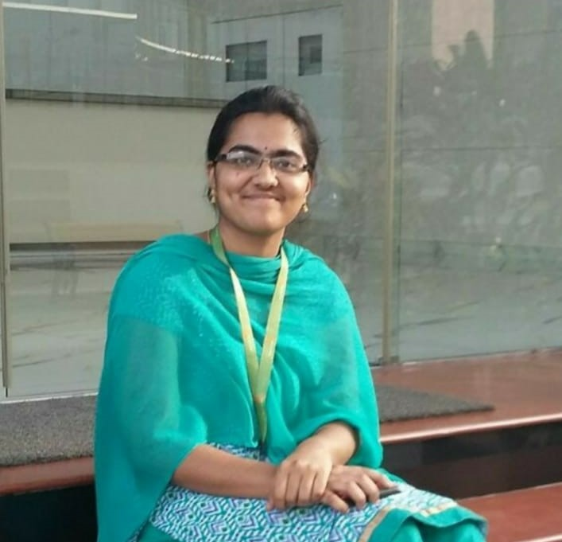
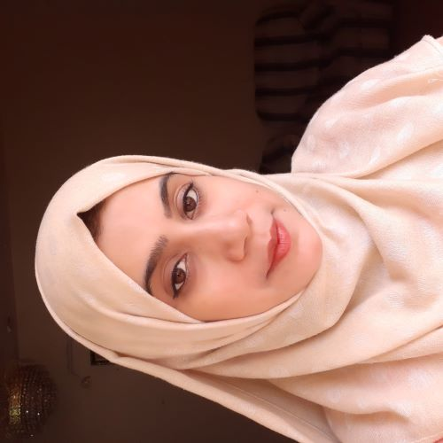

|
|
Dr. Paresh Saxena is an Associate Professor in the Dpt. of Computer Science & Information Systems, BITS-Pilani, Hyderabad, India.
He is currently leading a project MUT-DROCO (Multipath Networking Testbed for Drone Communications) funded by DST-SERB,
Govt. of India and a project NANCY (Neural Adaptive Network Coding for video transmission over wireless networks) funded by TCS, India.
Previously, he has been involved as a work package leader in two European Space Agency (ESA) funded projects: SatNetCode and HENCSAT, along with a work package member in European H2020 funded project Geo-Vision.
He was a member of European COST action IC1104 from 2013-2016 and worked on the project funded by MITACS, Canada in 2008.
He has been a visiting researcher in SFU, Vancouver, Canada in 2008 and Telecom ParisTech, Paris in 2010.
During his PhD from UAB, Barcelona, Spain, he was awarded UAB Doctoral Fellowship Grant (P.I.F) from 2011-2015.
Post-PhD, he was fortunate to spend a few years at AnsuR Tech., Oslo, Norway as a Senior researcher from 2015-2018.
Prior to his graduation, he was awarded with a National Talent Search Examination (NTSE) scholarship, India where he scored overall 11th rank in the country.
His primary research focus is on the design and implementation of reliable and robust data transfer protocols for Non-terrestrial networks.
Email: psaxena@hyderabad.bits-pilani.ac.in
|
News
|
Selected Projects/Fellowships
|
MASTIC: ML-Aided Secure SoC and Analytics
Funding Agency: Axiado
Year: 2021-2023
Project Type: Research & Development
|
MUT-DROCO: Multipath Networking Test-bed for Drone Communications
Funding Agency: DST-SERB, Govt. of India.
Year: 2020-2022
Project Type: Research & Development
|
NANCY: Neural Adaptive Network Coding methodologY for video distribution through wireless networks.
Funding Agency: TCS, India .
Year: 2019-2023
Project Type: Fellowship for PhD Student
|
Real-time Performance Analysis of Network Coding Implementation
Funding Agency: BITS Pilani, India.
Year: 2020-2022
Project Type: Research & Development
|
HENCSAT: Highly Efficient Network Coding for Satellite Applications Test-bed.
Funding Agency: European Space Agency, Netherlands .
Year: 2016-2020
Project Type: Research & Development
|
SatNetCode: Satellite Network-Coding for High Performance, Semantic-Aware Mission Critical Visual Communications.
Funding Agency: European Space Agency, Netherlands .
Year: 2015-2018
Project Type: Research & Development
|
PhD Fellowship
Funding Agency: Govt. of Spain, UAB, Barcelona, Spain
Year: 2011-2015
Project Type: Fellowship
|
National Talent Search Examination (NTSE) Fellowship
Funding Agency: National Council of Educational Research and Training, India.
Year: 2002
Project Type: Fellowship
|
Visiting Researcher Fellowship
Funding Agency: ParisTech, Paris, France
Year: 2010
Project Type: Research & Development
|
Visiting Researcher Fellowship
Funding Agency: Simon Fraser University, Vancouver, Canada
Year: 2008
Project Type: Fellowship
|
Research Group
Ph.D. Students
 Mandan Naresh
Mandan Naresh
Mandan Naresh received the B. Tech and M. Tech degrees in Computer Science and Engineering in 2012 and 2014, respectively. He has been working as a Lecturer in Computer Science department before starting his PhD studies. His research interests are in the field of machine learning
techniques for video distribution.
Pattiwar Shravan Kumar
Shravan Pattiwar received the B.Tech and M.Tech degrees in Computer Science and Engineering from Jawaharlal Nehru University, Hyderabad, in 2011 and 2017, respectively. He has been working in software industry for several years before starting his PhD studies. His research interests are in multipath networking technologies.

Chavali Lalitha
Chavali Lalitha received the B. Tech degree in Information Technology from Jawaharlal Nehru University, Hyderabad in 2017 and the M. Tech degree in Computer Science from Osmania University in 2019. Her research interests are primarliy in the field machine learning techniques for non-terrestrial networking and communications.

Nida Fatima
Nida Fatima received the B. Tech and M. Tech degrees in Computer Science and Engineering from Jawaharlal Nehru University, Hyderabad, in 2012 and 2015, respectively. She has been a Lecturer in Computer Science Dept., since 2015. Her research interests are primarily in the field of integrated satellite-terrestrial networking, software defined networking and Internet of Things.
Chillara Anil Kuma
Chillara Anil Kumar received the B. E degree in Instrumentation and Electronics from
Bangalore University in 2005 and the M. Tech degree in Information Technology from VTU, 2009. He has several years of work experience as an IT consultant before joining his PhD program in 2020. His research interests are primarily in the field of ML integrated data security algorithms for I/O devices.
S Shashank
S Shashank received a B. Tech degree in Electronics and Communication Engineering from Jawaharlal Nehru Technological University, Hyderabad, in 2018 and an M. E degree in Electronics and Communication Engineering from Osmania University in 2021. His research interests are primarily in the field of RF Communications and Signal Processing.
Krishna Maitreya Jaldu
Krishna Maitreya Jaldu earned his B.Tech degree in Electronics and Communication Engineering from Vel Tech University in 2024. His research interests encompass IoT and computer vision for detection applications.
Undergraduate Researchers
-
Thesis Student: Shivaank Agarwal, Thesis Topic: Computer vision and image processing for plastic waste classification, Co-Supervisor: Prof. Ravindra Gudi, IIT Mumbai.
-
Thesis Student: Krut Patel, Thesis Topic: Enabling Analytics Queries on Petabyte Scale Data, Co-Supervisor: Dr. Bhargav Gulavani, Microsoft Research Lab India, Bangalore.
-
Project Students: Vaibhav Yadav, Gokul Kumar, Ujjwal Raizada, Pranjal Gupta (Multipath Networking Protocols), Simran sandhu and Vamsi Nallapareddy (Reinforcement Learning for Video) and Gotam Dahiya (Drones Hardware).
|
Past Students
Mandan Naresh
Mandan Naresh has submitted his PhD thesis and is awaiting defense. He recently joined as an Assistant Professor at GITAM University, Hyderabad, India.
|
Selected Publications
|
Journals and Conferences
-
Chavali, Lalitha, Abhinav Krishnan, Paresh Saxena, Barsha Mitra, and Aneesh Sreevallabh Chivukula, "Off-policy actor-critic deep reinforcement learning methods for alert prioritization in intrusion detection systems," Computers & Security 142 (2024): 103854.
-
Kumar, Pattiwar Shravan, Paresh Saxena, and Özgü Alay, "DEAR: DRL Empowered Actor-Critic ScheduleR for Multipath QUIC Under 5G/B5G Hybrid Networks," accepted in the 38th International Conference on Advanced Information Networking and Applications (AINA), Kitakyushu, Japan.
-
Chavali, Lalitha, Paresh Saxena, and Barsha Mitra, "Knowledge Empowered Deep Reinforcement Learning to Prioritize Alerts Generated by Intrusion Detection Systems," accepted in the 38th International Conference on Advanced Information Networking and Applications (AINA), Kitakyushu, Japan.
-
M. Naresh, P. Saxena, and M. Gupta, "DRL Empowered On-policy and Off-policy ABR for 5G Mobile Ultra-HD Video Delivery," Mobile Networks and Applications (2024): 1-14.
-
Chillara, Anil Kumar, Paresh Saxena, Rajib Ranjan Maiti, Manik Gupta, Raghu Kondapalli, Zhichao Zhang, and Krishnakumar Kesavan, "Deceiving supervised machine learning models via adversarial data poisoning attacks: a case study with USB keyboards," International Journal of Information Security (2024): 1-19.
-
Fatima, Nida, Paresh Saxena, and Giovanni Giambene, "Deep reinforcement learning based computation offloading for xURLLC services with UAV-assisted IoT-based multi-access edge computing system," Wireless Networks (2023): 1-17.
-
M. Naresh, P. Saxena, and M. Gupta, "Deep Reinforcement Learning with Importance Weighted A3C for QoE enhancement in Video Delivery Services," accepted in the 24th IEEE International Symposium on a World of Wireless, Mobile and Multimedia Networks (WoWMoM), Boston, Massachusetts, June 12-15, 2023.
-
M. Naresh, P. Saxena, and M. Gupta, "PPO-ABR: Proximal Policy Optimization Based Deep Reinforcement Learning for Adaptive BitRate Streaming" accepted in 18th IEEE International Wireless Communications and Mobile Computing Conference (IWCMC), Marrakesh, Morocco, June 19-23, 2023.
-
M. Naresh, V. Das, P. Saxena, and M. Gupta, "Deep reinforcement learning based QoE-aware actor-learner architectures for video streaming in IoT environments." Computing (2022), 1-24.
-
N. Fatima, P. Saxena, and M. Gupta. "Integration of multi access edge computing with unmanned aerial vehicles: Current techniques, open issues and research directions." Physical Communication 52 (2022), 101641.
-
L. Chavali, T. Gupta, P. Saxena, "SAC-AP: Soft Actor Critic Based Deep Reinforcement Learning for Alert Prioritization," accepted in IEEE Congress on Evolutionary Computation (IEEE CEC 2022), Italy, July 2022.
-
S. Agarwal, R. Gudi, and P. Saxena. "Image Classification Approaches for Segregation of Plastic Waste Based on Resin Identification Code." Transactions of the Indian National Academy of Engineering (2022), 1-13.
-
M. Naresh, N. Gireesh, P. Saxena, and M. Gupta, "SAC-ABR: soft Actor-Critic based deep reinforcement learning for adaptive BitRate streaming", in 14th International Conference on COMmunication Systems & NETworkS (COMSNETS) (COMSNETS 2022), Bangalore, India, January 2022.
-
Pattiwar Shravan Kumar, Nida Fatima, and Paresh Saxena, "Performance analysis of multipath transport layer schedulers under 5G/B5G hybrid networks," accepted in 14th IEEE/ACM International Conference on COMmunication Systems & NETworkS (COMSNETS), January 2022.
-
P. Saxena, M. Naresh, M. Gupta, A. Achanta, S. Kota and S. Gupta, “NANCY: Neural Adaptive Network Coding methodologY for video distribution over wireless networks” Accepted in IEEE 39th Global Communications Conference (Globecom), Taipei, Taiwan, Dec 2020.
-
T. Dreibholz, P. Saxena, H. Skinnemoen, “Efficient network coding for satellite applications: a live demo of HENCSAT and NECTOR”, 45th IEEE Conference on Local Computer Networks (LCN 2020), Sydney, Australia, Nov 2020.
-
S. Agarwal, R. Gudi, P. Saxena, “ One-Shot learning based classification for segregation of plastic waste”, International Conference on Digital Image Computing: Techniques and Applications (DICTA), Melbourne, Australia, December 2020.
-
A. Kasturi, A. R. Ellore, P. Saxena, and C. Hota, “ Hybrid Fusion Learning: A Hierarchical Learning Model for Distributed Systems”, 4th International Workshop on Deep Learning for Mobile Systems and Applications (26th MobiCom 2020), ACM, London, Sept 2020.
-
P. Saxena, T. Dreibholz, H. Skinnemoen, O. Alay, M. A. Vazquez-Castro, S. Ferlin and G. Acar, “Resilient Hybrid SatCom and Terrestrial Networking for Unmanned Aerial Vehicles” in in Proceedings of the 39th IEEE International Conference on Computer Communications (INFOCOM), International Workshop on Wireless Sensor, Robot and UAV Networks (WISARN), Toronto, Canada, July 2020.
-
M. A. Vázquez-Castro, P. Saxena, T. Do-Duy, F. Vamstad and H. Skinnemoen, “SatNetCode: Functional Design and Experimental Validation of Network Coding over Satellite”, in international symposium on networks, computers and communications (ISNCC), June 2018.
-
P. Saxena and M. A. Vazquez-Castro, “Practical design of network coded multicast over satellite”, in International Journal on Advances in Networks and Services, vol. 9, no 1-2, July 2016.
-
P. Saxena and M. A. Vazquez-Castro, “DARE: DoF-Aided Random Encoding for network coding over lossy line networks”, IEEE communication letters, vol. 19, no. 8, pp. 1374-1377, August 2015.
-
P. Saxena and M. A. Vazquez-Castro, “Link layer random network coding for DVB-S2X/RCS'”, IEEE communication letters, vol. 19, no. 7, pp. 1161-1164, July 2015.
-
M. A. Pimentel-Nino, P. Saxena and M. A. Vazquez-Castro, “Reliable adaptive video streaming driven by perceptual semantics for situational awareness”, The Scientific World Journal, vol. 2015, Article ID 394956, 16 pages, doi:10.1155/2015/394956, May 2015.
-
M. A. Vázquez-Castro and P. Saxena, “Network coding over satellite: from theory to design and performance’, in proceedings of the 7th EAI International Conference on Wireless and Satellite Systems, Bradford (Britain), July 2015.
-
P. Saxena and M. A. Vázquez-Castro, “Network coded multicast and multi-unicast over satellite”, in proceedings of the 7th international conference on advances in satellite and space communications, Barcelona (Spain), April 2015.
-
P. Saxena and M. A. Vázquez-Castro, “Random Network Coding over Satellite”, in international symposium on algebraic approaches to stroage and network coding, Barcelona (Spain), January 2014.
-
M. A. Pimentel-Niño, P. Saxena and M. A. Vázquez-Castro, “QoE driven adaptive video with Overlapping Network Coding for Best Effort Erasure Satellite Links”, in proceedings of the 31st AIAA international communications satellite systems conference, Florence (Italy), October 2013.
-
P. Saxena and M. A. Vázquez-Castro, “Network coding advantage over MDS codes for multimedia transmission via erasure satellite channels”, in proceedings of the 5th International conference on personal satellite services (PSATS 2013), Toulouse (France), June 2013.
-
P. Saxena and M. A. Vázquez-Castro, “Random Network Coding advantage over MDS codes for Adaptive multimedia communications”, in international conference on Random Network Codes and Designs over GF(q), Ghent (Belgium), September 2013
-
R. Alegre-Godoy, P. Saxena and M. A. Vázquez-Castro, “Multicast transmission over the Butterfly Network”, in First European training school in Network Coding, Barcelona (Spain), Feburary 2013.
-
P. Saxena and M. A. Vázquez-Castro, “Interference-free regions with Han-Kobayashi Scheme for M-QAM and Scalar channels”, in proceedings of the 8th IEEE International Conference on Wireless and Mobile Computing, Networking and Communications (WiMob 2012), Barcelona (Spain), October 2012.
Book Chapters and Standarization Activities
-
P. Saxena and M. A. Vazquez-Castro, “Network coding advantage over MDS codes for multimedia transmission via erasure satellite channels”, Lecture notes of the institute for computer sciences, social informatics and telecommunications engineering, (Springer 2013), Volume 123, 2013, pp 199-210, ISBN: 978-3-319-02761-6.
-
M. A. Vazquez-Castro and P. Saxena, “Network coding over satellite: from theory to design and performance”, Wireless and Satellite Systems, (Springer 2015), Volume 154, 2015, pp 315-327, ISBN: 978-3-319-25479-4.
-
"Network Coding Taxonomy" (https://tools.ietf.org/html/draft-irtf-nwcrg-network- coding-taxonomy-04) in Network Coding Research Group (NWCRG) - IRTF, July 3, 2017.
-
"Network Coding Function Virtualization" (https://tools.ietf.org/html/draft-vazquez-nfvrg-netcod-function-virtualization-00) in Network Function Virtualization Research Group (NFVRG) - IRTF, November 2016.
-
"System and layer independent network coding architecture design", in Network Coding Research Group (NWCRG) - IRTF, Prague (Czech Republic), July 2015.
|
|

{kind=link}